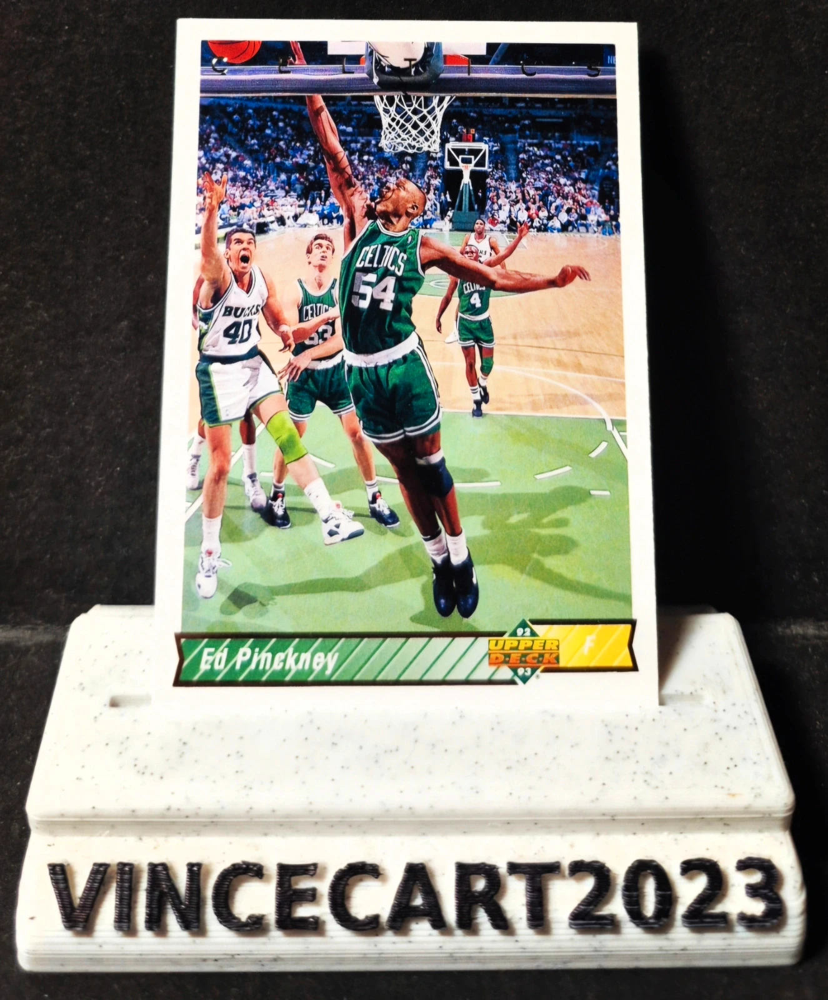

🏀 Carte NBA Ed Pinckney #257 – Boston Celtics – Upper Deck 1992-93 🏀
1,0 €
Carte originale de Ed Pinckney, intérieur emblématique des Boston Celtics, issue de la célèbre collection Upper Deck 1992-93.
📌 Joueur : Ed Pinckney
📌 Équipe : Boston Celtics
📌 Numéro : #257
📌 Collection : Upper Deck 1992-93
📌 État : Très bon état (voir photos)
Ancien champion NCAA avec Villanova et joueur reconnu pour son impact défensif et son travail dans la raquette, Ed Pinckney a marqué plusieurs franchises NBA, dont les légendaires Celtics.
✅ Carte authentique des années 90
✅ Idéale pour collectionneurs NBA vintage
✅ Superbe design Upper Deck
📦 Envoi rapide et soigné sous sleeve
Disponibilité à confirmer sur Vinted.